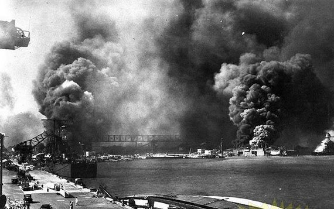

«Мудрый человек всегда найдёт способ, чтобы не начать войну»
И. ЯМАМОТО
На заре истории японской армейской авиации, незадолго до начала Первой мировой войны, основной тактической единицей был коку дайтай (полков), состоявший из двух чутаев (эскадрилий) по девять самолетов в каждом и тремя машинами в резерве, а также трех машин штабного звена - итого 27 самолетов. В 1925 году эту систему заменили, увеличив как штатную численность, так и название. Теперь полк назывался хико рентай и состоял из двух, трех, или чаше всего четырех чутаев, объединенных по двое в два дайтая. Хико рентай был многоцелевой частью. Обычно в его составе было два разведывательных чутая и двух истребительных чутая, объединенных в разведывательный и истребительный дайтай, соответственно. В 1937 году в Китае большинство хико рентай действовали, разделившись по тактическим соображениям на дайтай. Так появились хико дайтай, которые не следует путать с дайтаями, существовавшими до 1925 года. Одновременно возникли докурицу хико чутай - отдельные эскадрильи, которые придавались непосредственно штабу бригады или армии.
Ki-43
Полученный опыт показал преимущества небольших частей в сравнении с полком, хотя в большинстве случаев численность хико дайтая все же следовало немного увеличить. В июле-августе 1938 года началась очередная реорганизация японской армейской авиации. Все хико дайтай и хико рентай переименовали в хико сентай. По-прежнему существовали и формировались новые докурицу хико сентай. В то время как чутай, дайтай и рентай можно перевести как эскадрилья, дивизион и полк(теми же словами в японской армии обозначались роты, батальоны и полки), то сентай отличался от рентая структурой, необычной и ориентированной на условия авиационной части. Поэтому мы будем переводить слово сентай как группа или авиационная группа, тем более что такой перевод все чаще и чаше встречается в современной литературе. В буквальном переводе слово сентай обозначает боевая часть.
Сентай уже был специализированной частью и состоял из трех, реже четырех, чутаев (эскадрилий), которые, в свою очередь, делились на три шотая (звена) по три самолета в каждом. Вместе со штабным звеном (сентай хомбу) и машинами резерва (номинально до трети парка сентая) численность самолетов достигала 45 машин в истребительном сентае и 30 в бомбардировочном или разведывательном сентае.
Два или больше сентая составляли хикодан (авиационную бригаду), два или больше хикодана (часто дополненные отдельными чутаями) составляли хикошудан (авиакорпус). Где-то в середине 1942 года название хикошудан заменили на хикошидан (авиационная дивизия), однако организация соединения осталась прежней. Наивысшим организационным уровнем был кокугун (воздушная армия), состоявшая из двух хикошиданов. Как и на других уровнях, некоторые кокугуны включали в себя отдельные хикоданы или сентай, подчинявшиеся непосредственно командованию армии. Во время войны на Тихом океане армейская авиация Японии действовала в составе шести кокугунов. В апреле 1945 года четыре армии, базировавшиеся на территории страны, в Китае и Корее были объединены в составе кокусогун (главной воздушной армии), однако на ход боевых действий это почти не повлияло.
В апреле 1944 года организация сентая подверглась новым изменениям. До сих пор сентай состоял только из летного состава, а технические службы и аэродромное обслуживание структурно в него не входили. Теперь в составе сентая объединили все перечисленное. В составе сентая выделился летный отряд хикотай и наземный отряд сейбитай. В свою очередь хикотай подразделялся на когекитай (штурмовые отряды), по сути на старые чутаи. лишь получившие новое название по идеологическим соображениям. Новое название не прижилось, поэтому летчики использовали слово чутай до конца войны. Единственным практическим последствием всех этих переименований стало то, что сентайчо (командир сентая) теперь руководил большой самодостаточной частью. Его помощников называли хикотайчо и сейбитайчо.
Кроме того, существовали части других типов:
Докурицу хикодан (отдельная авиационная бригада) - хикодан, действующий в составе кокугуна, иногда непосредственно подчиняющийся командованию ВВС.
Докурицу хикотай хомбу (отдельный штабной авиаотряд) - иногда сентай делили на отдельные отряды, которые обычно занимались авиаразведкой.
Докурицу чутай (отдельная эскадрилья) - штаб сентая составлял отдельную часть и сохранял свои управляющие функции.
Чоккё хикотай (вспомогательный авиаотряд) - отдельные отряды, численностью равные или меньше, чем чутай. Их использовали для связи или поддержки сухопутных частей. В октябре 1944 года их все переименовали в докурицу хико чутай.
Япония была единственной крупной державой, у которой армейская и морская авиация целиком подчинялись командованию сухопутных войск и ВМФ, соответственно. Такое положение дел возникло с появлением у Японии авиации и просуществовало вплоть до августа 1945 года. В армиях других стран разделение на армейскую и морскую авиацию способствовало развитию здоровой конкуренции, что благоприятно сказывалось на развитии военно-воздушных сил в целом. Однако существовавший в Японии политический климат привел к тому, что армейская и морская авиация развивались совершенно независимо друг от друга. Никакой координации не существовало. Это приводило к дублированию усилий и затрудняло обмен опытом. Ситуация практически не изменилась даже тогда, когда американские войска вплотную приблизились к островам Японии. Разница в традициях также касалась оценки полученного опыта.
Все перечисленное выше приводило к тому, что армейская и морская авиации часто пользовались самолетами разных типов, но имевших практически одинаковые технические характеристики. Этот факт до сих пор удивляет военных историков.

Нападение на Пёрл-Харбор
Утром в воскресенье 7 декабря 1941 года без объявления войны Япония совершила нападение на США, атаковав самолетами с авианосцев главную базу Тихоокеанского флота США Пирл Харбор, расположенную на одном из Гавайских островов — Оаху. В Пирл Харборе в это воскресное утро находилось около сотни судов, включая 8 линкоров, 8 крейсеров и 29 эсминцев. Более трети личного состава находилось на берегу.
В 6 часов утра первый ударный эшелон, 183 машины в составе четырех групп направились к Пирл Харбору, 51 пикирующий бомбардировщик тип «99» (потом американцы назовут его по-своему — «Вэл») с 250 килограммовыми бомбами и 89 палубных бомбардировщиков тип «97» («Кейт»), из которых 40 машин были вооружены торпедами, а остальные — 800-килограммовыми бомбами, В стороне, прикрывая бомбардировщики, летели 43 истребителя тип «О» («Зеро»).
Еще через час взлетели самолеты второй волны в составе 80 пикирующих бомбардировщиков тип «99», 54 палубных бомбардировщика тип «97» и 36 истребителей тип «О».
Широко распространенным в то время на Западе было мнение, что японская авиация, хотя и многочисленная, является в большинстве своем устаревшей. Между тем авиация ВМФ Японии состояла из весьма совершенных самолетов. Наиболее «старым» из принимавших участие в ударе по Пирл Харбору был палубный бомбардировщик тип «97» фирмы Накадзима (для того, чтобы определить год принятия на вооружение японского самолета с двузначным номером, необходимо сложить его с числом 1840), начавший в 1937 году поступать на корабли. Для своего времени он оказался, без всякого сомнения, лучшим палубным бомбардировщиком-торпедоносцем в мире. С двигателем мощностью 1115 л. с., винтом изменяемого шага, убирающимся шасси, закрылками Фаулера и вооружением, включающим 794-килограммовую торпеду либо три 250-килограммовых бомбы, этот двух-трехместный самолет уже после Пирл Харбора торпедными атаками уничтожил четыре американских авианосца в течение всего лишь 10 месяцев войны!